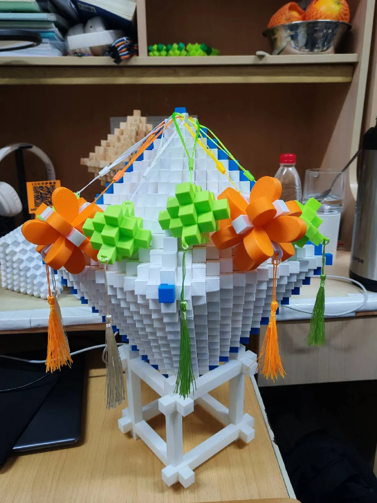

返回硬件项目索引
返回硬件项目索引H37 / 硬件团队 · 软件展示
菠萝鲁班锁制作与拼接的通用方法
档案封面选自鲁班锁拼接作品。
鲁班锁是一种常见的益智玩具，本研究选取其中常见的一类——菠萝鲁班锁进行研究。我在大量地制作和拼接菠萝鲁班锁的基础上，总结出了菠萝鲁班锁一般简便的制作方法——“z轴集中法”和通用的拼接方法——“八步法”；运用数列、函数、立体几何等数学知识推导出了菠萝鲁班锁各类锁块根数公式、总根数公式，并研究菠萝鲁班锁的一些数学性质；把计算公式编写成Scratch、Python、C++程序；还将程序转换为人们常用的微信小程序、HTML网页版、电脑应用程序、手机APP；用木工方法和3D打印进行实践验证，设计制作了市面上没有的99、129、289、393、649根菠萝鲁班锁，验证了方法的可行性、普适性；本研究的成果为鲁班锁爱好者提供了制作和拼接菠萝鲁班锁的理论支撑和方法指引，方便了它的普及推广与生产应用。
